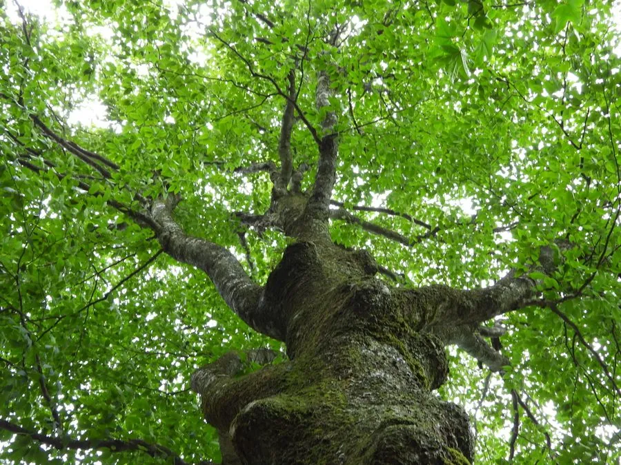

乔木 · 植物界
水青冈 Fagus longipetiolata

中国南方山地落叶阔叶林的主要树种，叶片边缘具波状齿，秋季叶色金黄，木材可供建筑与家具用，种子可榨油。
- 分类
- 门被子植物门纲木兰纲目壳斗目科壳斗科属水青冈属
- 栖息环境
- 海拔 1000–2000 米的山地，喜温暖湿润、耐阴
- 地理分布
- 中国长江流域以南及华南、西南山地，越南也有分布
- 保护级别
- 暂无评估；中国未列入国家重点保护野生植物名录
物种志
水青冈为落叶乔木，高可达 25 m，树皮灰白色、平滑；叶片卵形至卵状披针形，边缘具波状齿，叶柄较长，故学名意为“长柄”。花期 4–5 月，花单性同株，雄花序头状下垂；壳斗 4 裂，苞片钻形，坚果卵状三角形，成熟时褐色。
水青冈分布于中国长江流域以南及华南、西南山地，也见于越南，喜温暖湿润、耐阴，适宜深厚肥沃的酸性土壤，是亚热带山地落叶阔叶林的主要树种。木材坚硬、纹理直，可供建筑、家具与车辆用；种子可榨油或食用；秋季叶色金黄，是山地秋色叶树种。水青冈林对涵养水源、保持水土具有重要作用，也是多种野生动物的栖息地。
形态与习性
- 株高可达 25 m，树皮灰白色
- 花期4–5 月，雄花序头状下垂
- 果期9–10 月，坚果卵状三角形
- 光照耐阴，幼树喜庇荫
- 土壤深厚肥沃的酸性壤土
- 主要用途建筑与家具用材、种子榨油、秋景观赏
趣味知识
- 水青冈的叶柄较长，学名 longipetiolata 的意思就是“长叶柄的”。
- 水青冈是亚热带山地落叶阔叶林的主要树种，秋季叶色金黄。
- 水青冈的坚果含油，可榨油或炒食。